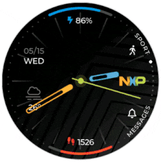
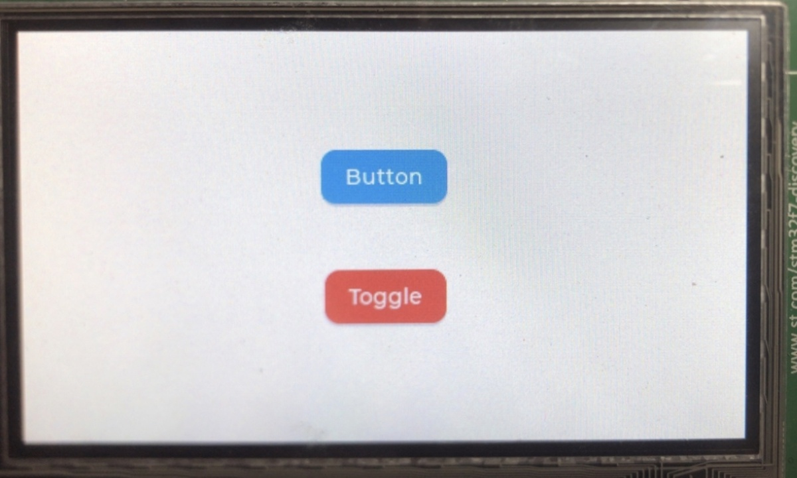
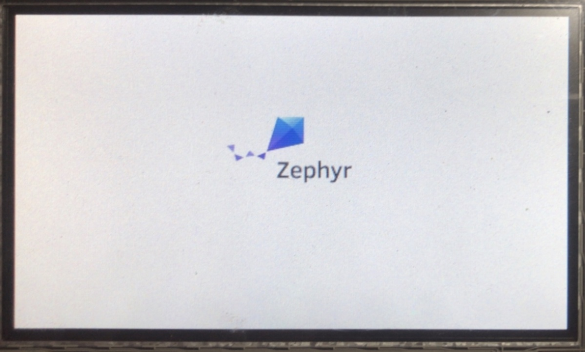
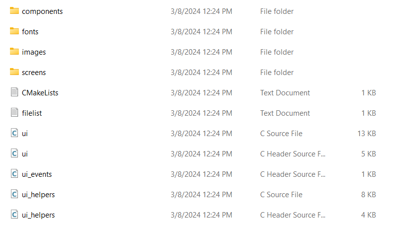
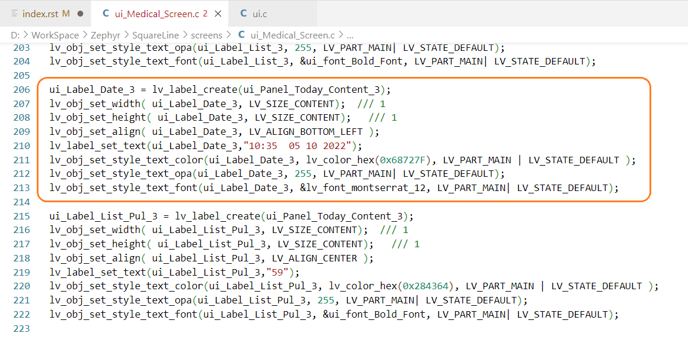

LVGL
Tổng quan
LVGL là thư viện đồ họa nhúng mã nguồn mở và miễn phí phổ biến nhất để tạo giao diện người dùng đẹp mắt cho mọi MCU, MPU và loại màn hình. Nó được hỗ trợ bởi các nhà cung cấp và dự án hàng đầu trong ngành như Arm, STM32, NXP, Espressif, Nuvoton, Arduino, RT-Thread, Zephyr, NuttX, Adafruit và nhiều dự án khác.
Nó có tất cả các tính năng để tạo GUI hiện đại và đẹp mắt: hơn 30 tiện ích tích hợp, hệ thống kiểu dáng mạnh mẽ, trình quản lý bố cục lấy cảm hứng từ web và hệ thống kiểu chữ hỗ trợ nhiều ngôn ngữ. Để tích hợp LVGL vào nền tảng của mình, tất cả những gì bạn cần là RAM ít nhất 32kB và Flash 128 kB, trình biên dịch C, bộ đệm khung và ít nhất bộ đệm có kích thước màn hình 1/10 để hiển thị.
Hướng dẫn cụ thể:
Sử dụng Documents LVGL:
Ghi chú
Lưu ý: Project được build trên Window
Cấu trúc project LVGL:
Cấu trúc thư mục của một project LVGL như sau:
main.c CMakeLists.txt prj.conf app.overlay image.cFile
app.overlaycó thể có hoặc không do file này dùng để chèn thêm các config cho board mà mặc định zephyr không hổ trợ.File
prj.confchứa đoạn mã cấu hình sau:CONFIG_LV_Z_MEM_POOL_SIZE=16384 CONFIG_MAIN_STACK_SIZE=2048 CONFIG_LV_FONT_MONTSERRAT_26=y CONFIG_LV_FONT_MONTSERRAT_14=y CONFIG_DISPLAY=y CONFIG_DISPLAY_LOG_LEVEL_ERR=y CONFIG_LOG=y CONFIG_SHELL=y CONFIG_LVGL=y CONFIG_LV_Z_SHELL=y CONFIG_LV_MEM_CUSTOM=y CONFIG_LV_USE_LOG=y CONFIG_LV_USE_LABEL=y CONFIG_LV_USE_BTN=y CONFIG_LV_USE_ARC=y CONFIG_LV_USE_IMG=y CONFIG_LV_USE_MONKEY=yFile
CMakeLists.txtgồm:# SPDX-License-Identifier: Apache-2.0 cmake_minimum_required(VERSION 3.20.0) set(BOARD stm32f746g_disco) find_package(Zephyr REQUIRED HINTS $ENV{ZEPHYR_BASE}) project(lvgl) target_sources(app PRIVATE main.c)Ghi chú
Lưu ý: File
CMakeLists.txttrên đang build cho board STM32F746G DISCO. Nếu project có thêm file đuôi.cthì bạn chèn thêm lệnhtarget_sources(app PRIVATE 'tên file kèm đuôi')
File
image.ckhông bắt buộc phải có. Đối với những trường hợp cần có như khai báo 1 biến chứa bitmap ảnh cần hiển thị lên màn hình, bạn cần tạo file có đuôi.c. Để tạo file đó từ 1 hình ảnh cho trước. Đầu tiên xóa phông nền ảnh và chỉnh kích thước nếu cần. Sau đó sử dụng tools Image Converter chọn hình cần chuyển đổi với thông số như Color format để làCF_TRUE_COLOR_ALPHA, thông số File name(s) đặt tên cho file, các thông số khác để mặc định và cuối cùng là nhấn bắt đầu chuyển đổi.Ghi chú
Lưu ý: Mục File name(s) đặt tên như nào thì tên biến sử dụng trong chương trình chính cũng chính là tên đó!
File
main.cchứa những đoạn lệnh cơ bản sau:main.c1#include <zephyr/device.h> 2#include <zephyr/devicetree.h> 3#include <zephyr/drivers/display.h> 4#include <zephyr/drivers/gpio.h> 5#include <lvgl.h> 6#include <stdio.h> 7#include <string.h> 8#include <zephyr/kernel.h> 9#include <lvgl_input_device.h> 10#include <zephyr/logging/log.h> 11#define LOG_LEVEL CONFIG_LOG_DEFAULT_LEVEL 12 13LOG_MODULE_REGISTER(app); 14 15/*****************Chèn function vào đây!*****************/ 16 17int main(void) 18{ 19 const struct device *display_dev; 20 21 display_dev = DEVICE_DT_GET(DT_CHOSEN(zephyr_display)); 22 if (!device_is_ready(display_dev)) { 23 LOG_ERR("Device not ready, aborting test"); 24 return 0; 25 } 26 27 /*****************Gọi function tạo đối tượng màn hình ở đây!*****************/ 28 29 lv_task_handler(); 30 display_blanking_off(display_dev); 31 32 while (1) { 33 34 /*****************Chèn code vào đây!*****************/ 35 36 lv_task_handler(); 37 k_sleep(K_MSEC(10)); 38 } 39}
Ví dụ:
Để tạo một nút nhấn (button) với 1 sự kiện nào đó bạn làm như sau:
Từ tài liệu tham khảo trên github tại mục
/examples/widgets/btn/lv_example_btn_1.cngoại trừ các định nghĩa#define,#ifdef,... bạn chỉ sử dụng những đoạn chương trình con và các khai báo biến cần thiết. Sau đó chèn chúng vào chương trình chính main.c tại line 15:Tại line 27 chúng ta gọi function
lv_example_btn_1()để thực hiện tạo đối tượng. Đối với functionevent_handler(lv_event_t * e)thì đây là một event sẽ xảy ra và được gọi ra xử lí nếu có tác động tới đối tượng đó trên màn hình, cụ thể ở đây là nút nhấn nên bạn không cần gọi function này ra.Cuối cùng biên dịch chương trình và nạp ta được kết quả:

Ghi chú
Lưu ý: Đối với các biến đối tượng
lv_obj_tbạn nên khai báo dạng biến toàn cục, vì có những trường hợp bạn cần lấy tham số thuộc đối tượng đó tại một event khác hoặc một đối tượng khác nào đó.
{kind=link}
Đối với đối tượng là hình ảnh:
Bạn cần
LV_IMG_DECLARE(img)(vớiimglà tên biến cũng như tên file bạn đặt khi convert ở trên) trước khi sử dụng tới biến hình ảnh, ví dụ:1LV_IMG_DECLARE(logo_img); 2lv_obj_t * img1 3 4void lv_example_img_1(void) 5{ 6 img1 = lv_img_create(lv_scr_act()); 7 lv_img_set_src(img1, &logo_img); 8 lv_obj_align(img1, LV_ALIGN_CENTER, 0, -20); 9}
Với biến
logo_imglà tên file được đặt và convert ở bước trên. Tên file đầy đủ khi convert xong làlogo_img.cBiên dịch và nạp chương trình ta được kết quả:

{kind=link}
Ghi chú
Lưu ý: Ví dụ trên chỉ hướng dẫn sử dụng cho những mẫu có sẵn trên github. Để có thể tự tạo những đối tượng theo
ý mình, bạn cần tham khảo các mẫu có sẵn kết hợp nguồn có trong mục /src cùng với sự nhuần nhuyễn
khi tìm hiểu nhiều sẽ có thể tạo ra đối tượng mình muốn
Sử dụng công cụ hỗ trợ SquareLine Studio:
Công cụ này được sử dụng để hỗ trợ bạn trong quá trình tự custom project của mình như trích xuất các đoạn chương trình giao diện hoặc hiệu ứng... từ project SquareLine mà bạn đã Export.
Bước 1: Cài đặt phần mềm SquareLine Studio.
Bước 2: Sử dụng SquareLine Studio
Sau các thao tác để tạo một giao diện trên SquareLine Studio, bạn import UI và xuất ra một cấu trúc file có dạng sau:
Thư mục
fontschứa các file đuôi.clà các font dạng bitmap được sử dụng trong project SquareLine của bạnThư mục
screenschứa chương trình khởi tạo các đối tượng trên màn hình. Dựa vào đó bạn có thể xem cách mà SquareLine khởi tạo và biên dịch ra từ những đối tượng trên màn hình, bạn có thể sử dụng những đối tượng đó và đặt chúng vào trong một chương trình con (function) giống với những mẫu đã trình bày ở trênVí dụ như hình trên ta có thể lấy một đoạn chương trình khởi tạo một
labelbỏ vào function, dĩ nhiên nên khai báo biến đối tượng dạng toàn cục, cấu trúc chương trình có dạng sau:lv_obj_t * ui_Label_Date_3; void lv_example_img_1(void) { ui_Label_Date_3 = lv_label_create(lv_scr_act()); lv_obj_set_width( ui_Label_Date_3, LV_SIZE_CONTENT); /// 1 lv_obj_set_height( ui_Label_Date_3, LV_SIZE_CONTENT); /// 1 lv_obj_set_align( ui_Label_Date_3, LV_ALIGN_BOTTOM_LEFT ); lv_label_set_text(ui_Label_Date_3,"10:35 05 10 2022"); lv_obj_set_style_text_color(ui_Label_Date_3, lv_color_hex(0x68727F), LV_PART_MAIN | LV_STATE_DEFAULT ); lv_obj_set_style_text_opa(ui_Label_Date_3, 255, LV_PART_MAIN| LV_STATE_DEFAULT); lv_obj_set_style_text_font(ui_Label_Date_3, &lv_font_montserrat_12, LV_PART_MAIN| LV_STATE_DEFAULT); }
File
ui.cchứa các event và hiệu ứng các đối tượng trên màn hìnhFile
ui_helper.cchứa các function cần thiết của project đó.
Sử dụng SquareLine Studio:
...